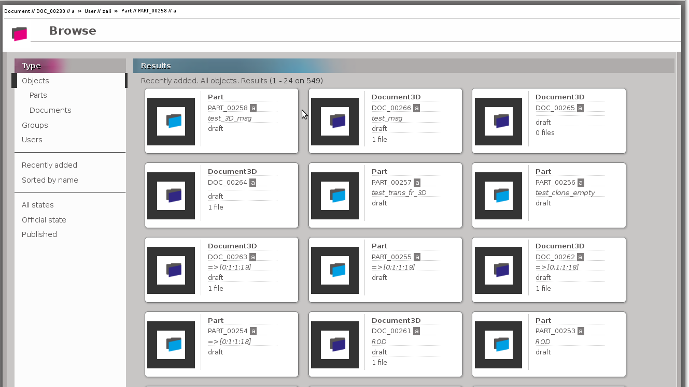

1. Browse
This document describes how to use browse feature

Select the type of data to display.
Choose how the data are sorted.
These options are only available for Objects (Part and Document).
The results are displayed according to the selected type and sorting.
There are at most 24 results per page.
Each result is displayed using an id-card which contains :
- the type,
- the reference and revision if it's an object,
- the name and description if these were filled in.
Note
If you are not logged in you will only see public data.